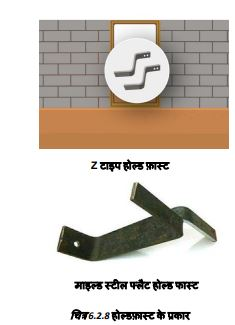
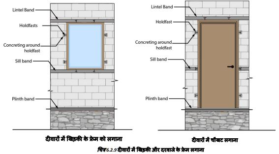

दीवारों में दरवाजे और खिड़कियों के फ्रेम लगाना
 
● चिनाई कार्य के दौरान दीवारों में दरवाजे और खिड़की के फ्रेम लगाए जाते हैं। फ्रेमो पर स्टील होल्डफास्ट लगाए जाते हैं जिन्होंने सीमेंट
कंक्रीट के साथ दीवारों में लगाया जाता है।
● खिड़की के फ्रेम में चारों तरफ होल्डफास्ट लगे होते हैं। ऊर्ध्वाधर पक्षों पर लगे होल्डफास्ट दीवारों पर लगाए गए हैं और ऊपर व नीचे
को होल्डफास्ट आरसीसी लिटेल और सिल बैंड पर लगाए गए हैं।
● दरवाजे के फ्रेम का मध्य होल्डफास्ट आरसीसी सिल बैंड में फिट किया गया है।
● भूकंप से सुरक्षा के लिए मजबूत दरवाजे और खिडकी की फ्रेम स्टील टी-सेक्शन के बनाएं। खिडकी के फ्रेम पर स्टील ग्रिल व बेल्ड कर के।
● भूकंप से सुरक्षा के लिए दरवाजे/खिड़कियाँ छोटी होनी चाहिए और दीवार के कोनों से कम से कम 60cm दूर होनी चाहिए। एक दीवार
मे दो दरवाजे/खिड़कियाँ कम से कम 60 cm की चिनाई से अलग होनी चाहिए।
● सभी चिनाई वाली दीवारें प्लिंथ, लिंटेल और छत के स्तर पर 75mm मोटी आरसीसी बैंड से एक साथ बंधी होनी चाहिए।
● डिजाइन के अनुसार चिनाई वाली दीवार के कोनों पर ऊर्ध्वाधर स्टील की छड़ें या आरसीसी कॉलम प्रदान करें।
एक बार जब आरसीसी प्लिंथ बैंड ढल जाए, तो उसमें स्टील टी-सेक्शन का एक मजबूत दरवाजे का फ्रेम लगाया जाए।
दरवाजे के फ्रेमो को प्लिंथ के ऊपर सटीक स्थान पर रखें। फ्रेम के किनारे साहुल में होने चाहिए। चिनाई ऊपर जाने पर इसे कई बार जांचें। यदि आवश्यक हो तो लेवल और प्लंब के लिए फ्रेम को समायोजित करने के लिए शिम का उपयोग करें। फ्रेम में वेल्डेड होल्डफास्ट का उपयोग करके दरवाजे के फ्रेम को आसपास की संरचना में ठीक से लगाएं। इन्हें फ्रेम में इस तरह से वेल्ड किया जाता है
1) एक जोड़ी (प्रत्येक तरफ एक) प्लिंथ बैंड से 300mm ऊपर प्रदान की जाती है,
2) मध्य जोड़ी को सिल आरसीसी बैंड में फिट किया गया है,
3) एक जोड़ा लिंटेल बैंड से 300 mm नीचे फिट किया गया
है।
4) शीर्ष पर वेल्ड किया गया एक जोड़ा, आरसीसी लिंटेल बैंड
में फिट किया गया है।
जैसे-जैसे चिनाई ऊपर जाती है, होल्डफास्ट को चिनाई में या आरसीसी बैंड में लगा दिया जाता है। बाद में लगाए गए फ्रेम ढीले हो जाते हैं और भूकंप से सुरक्षा नहीं देते।
जैसे-जैसे चिनाई ऊपर बढ़ती है, खिड़की के फ्रेम के होल्डफास्ट भी दीवारों में लगा दिए जाते हैं।
1.निचला जोड़ा आरसीसी सिल बैंड में फिट किया जाता है।
2.जैसे-जैसे चिनाई का काम बढ़ता है, फ्रेम के ऊर्ध्वाधर किनारों पर लगे होल्डफास्ट को सीमेंट कंक्रीट के साथ दीवारों की चिनाई में लगा दिया जाता है
3.शीर्ष जोड़ी को आरसीसी लिंटेल बैंड में फिट किया जाता है।
दरवाजे, खिड़की के फ्रेम का सही स्तर और ऊर्ध्वाधरता सुनिश्चित करें।.
चिनाई कार्य के समय सभी दरवाजे और खिड़की के फ्रेम फिट करें। बाद में इन्हें फिट करने से होल्डफास्ट जोड़ ढीले हो जाते हैं।
चरण 10: दरवाजे-खिड़की के फ्रेम लगाना
दरवाजे के फ्रेम में 8 होल्डफास्ट होते हैं। निचले सिरे के पास 2 सीमेंट कंक्रीट का उपयोग करके दीवारों में लगाए गए हैं, दो खिड़की के स्तर पर हैं, ये आरसीसी सिल बैंड में लगे हैं, दो शीर्ष से लगभग 250mm नीचे हैं, ये सीमेंट कंक्रीट का उपयोग करके चिनाई में लगे हैं, अब फ्रेम के शीर्ष पर 2 होल्डफास्ट लगे हैं, ये लिंटेल बैंड में लगे हैं। यह प्रक्रिया दरवाजे के अंतराल को मजबूत बनाती है।
खिड़की के फ्रेम के मामले में फ्रेम के निचले हिस्से में दो और होल्डफास्ट दिए गए हैं, जो आरसीसी सिल बैंड में लगे हैं।